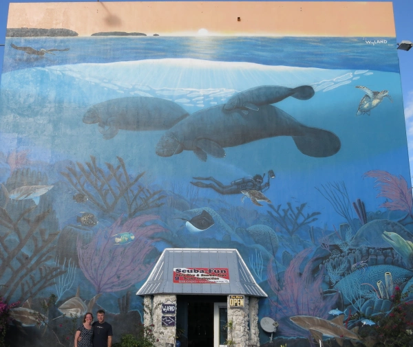
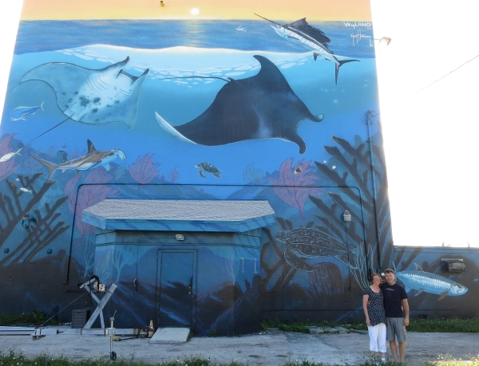

In Search of Wyland Walls

 It was a long drive from Sarasota to Key Largo but the alligators we saw in the Everglades made the drive worth it. “Keys to the Sea_“_ is a bit different from many of the other walls we’ve seen in that the mural is on all 4 sides of the building. It also contains a scuba diver which is very unusual. Maybe because the mural is on the walls of a dive shop or because Wyland is such an avid diver himself. Of course, the official record shows that the wall is on a Penske Truck Rental Facility building even though the building is now the Scuba-Fun Dive Shop.
The backside of this mural also shows Guy Harvey as a contributor, like on the Homosassa wall, though I saw no previous mention of that in the online documentation of the wall.
Key Largo, Florida (MM 99.2)
150 Feet Long x 45Feet High
Dedicated February 12, 2007
Excerpt from @wylandfoundation on Instagram
In 2007, Wyland added a burst of color and life to a four story, four side building at mile marker 99.2 in the median of the Overseas Highway that bisects Key Largo. Given the name “Keys to the Seas,” it was Wyland’s 95th wall and dedicated by famed folk singer Arlo Guthrie under rainy skies. “ Filled with indigenous fish, dolphins, and corals, it celebrates one of the largest barrier reef ecosystems in the world.